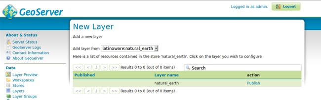
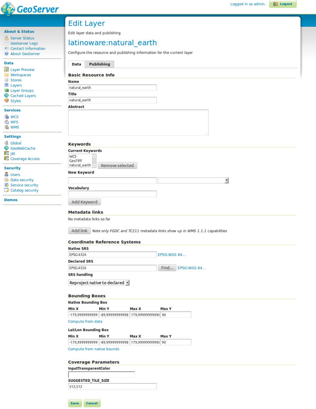
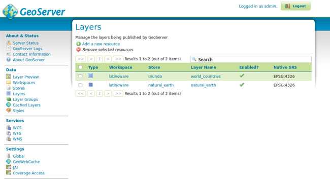
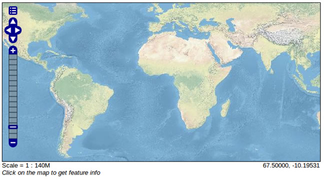

Contents
Vamos selecionar a nossa store cadastrada do tipo GeoTIFF e clicar em Publish
  Aba de dados  Listagem de camadas
Aba de dados
Listagem de camadas
Vamos clicar no menu lateral em Layer Preview e selecionar nossa camada cadastrada
 Visualização da camada no Openlayers
Visualização da camada no Openlayers
Camada Shapefile
Camada PostGIS
Digite os termos da busca ou o nome de um módulo, classe ou função.